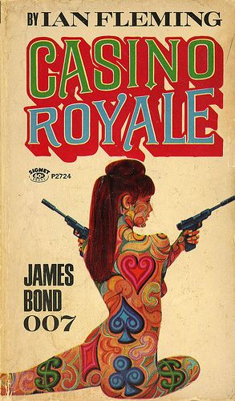

Casino Royale 1960s novel cover
Casino Royale
Original Publication 1953
Casino Royale is the first novel by the British author Ian Fleming. Published in 1953, it is the first James Bond book, and it paved the way for a further eleven novels and two short story collections by Fleming, followed by numerous continuation Bond novels by other authors.
The story concerns the British secret agent James Bond, gambling at the casino in Royale-les-Eaux to bankrupt Le Chiffre, the treasurer of a French union and a member of the Russian secret service. Bond is supported in his endeavours by Vesper Lynd, a member of his own service, as well as Felix Leiter of the CIA and René Mathis of the French Deuxième Bureau. Fleming used his wartime experiences as a member of the Naval Intelligence Division, and the people he met during his work, to provide plot elements; the character of Bond also reflected many of Fleming's personal tastes. Fleming wrote the draft in early 1952 at his Goldeneye estate in Jamaica while awaiting his marriage. He was initially unsure whether the work was suitable for publication, but was assured by his friend, the novelist William Plomer, that the novel had promise.
The Bond films are renowned for a number of features, including the musical accompaniment, with the theme songs having received Academy Award nominations on several occasions, and two wins. Other important elements which run through most of the films include Bond's cars, his guns, and the gadgets with which he is supplied by Q Branch. The films are also noted for Bond's relationships with various women, who are sometimes referred to as "Bond girls".
Within the spy storyline, Casino Royale deals with themes of Britain's position in the world, particularly the relationship with the US in light of the defections to the Soviet Union of the British traitors Guy Burgess and Donald Maclean. The book was given broadly positive reviews by critics at the time and sold out in less than a month after its UK release on 13 April 1953, although US sales upon release a year later were much slower.
Since publication Casino Royale has appeared as a comic strip in a British national newspaper, The Daily Express. It has been also adapted for the screen three times: a 1954 episode of the CBStelevision series Climax! with Barry Nelson as an American Bond, a 1967 film version with David Niven playing "Sir James Bond", and a 2006 film in the Eon Productions film series starring Daniel Craig as James Bond.